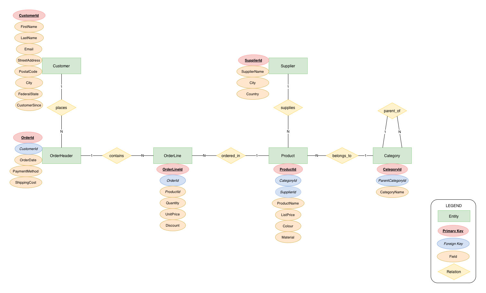
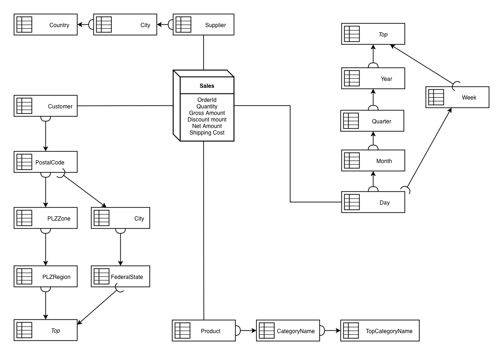
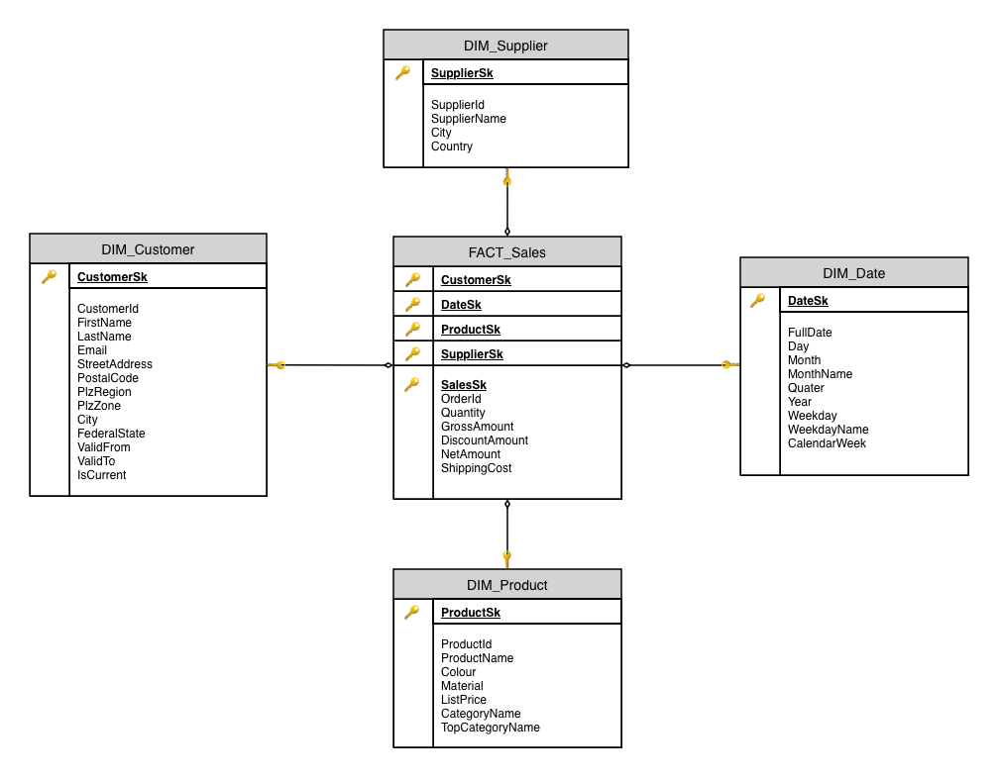
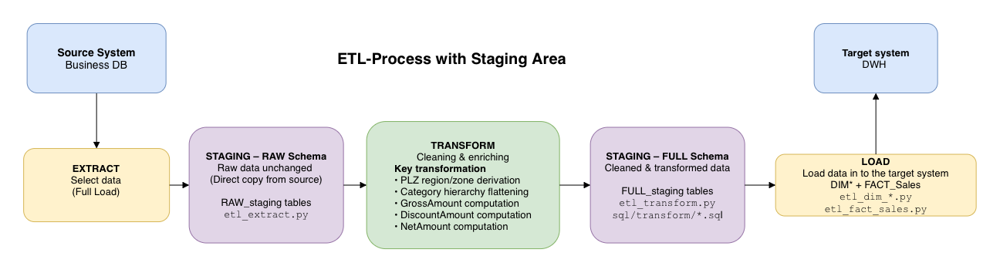

A German online furniture retailer (comparable to home24) sells furniture and home accessories to private customers throughout Germany. The operational shop database is designed exclusively for processing individual transactional orders answering "what is in order 41725?" quickly. However, it cannot efficiently answer high-level analytical queries such as "how did revenue per product category develop over the last two years?" without executing expensive joins and aggregations across the live database.
This project builds a compact yet complete data warehouse solution for the retailer: a normalized operational source database, a dimensional target model, and a Python-based ETL process connecting the two systems.
Design and implement a relational database in 3NF representing the shop's order-taking process.
Design a Star Schema dimensional model and implement an automated ETL pipeline in Python to transform and load transactional data.
Analyze dimension attribute behavior and demonstrate precise handling of SCD Types 0, 1, and 2.
Formulate and execute analytical SQL queries against the warehouse to deliver key operational insights.
The corresponding ERM diagram is shown below:

Supplier(
SupplierId INTEGER PK AUTOINCREMENT,
SupplierName TEXT NOT NULL UNIQUE,
City TEXT NOT NULL,
Country TEXT NOT NULL DEFAULT 'Germany'
)
Category(
CategoryId INTEGER PK AUTOINCREMENT,
CategoryName TEXT NOT NULL UNIQUE,
ParentCategoryId INTEGER FK -> Category(CategoryId) NULL
)
Product(
ProductId INTEGER PK AUTOINCREMENT,
ProductName TEXT NOT NULL UNIQUE,
ListPrice REAL NOT NULL CHECK(>0),
Colour TEXT,
Material TEXT,
CategoryId INTEGER NOT NULL FK -> Category(CategoryId),
SupplierId INTEGER NOT NULL FK -> Supplier(SupplierId)
)
Customer(
CustomerId INTEGER PK AUTOINCREMENT,
FirstName TEXT NOT NULL,
LastName TEXT NOT NULL,
Email TEXT NOT NULL UNIQUE,
StreetAddress TEXT NOT NULL,
PostalCode TEXT NOT NULL,
City TEXT NOT NULL,
FederalState TEXT NOT NULL,
CustomerSince TEXT NOT NULL -- ISO date YYYY-MM-DD
)
OrderHeader(
OrderId INTEGER PK AUTOINCREMENT,
OrderDate TEXT NOT NULL, -- ISO date YYYY-MM-DD
PaymentMethod TEXT NOT NULL CHECK IN ('credit_card','paypal','bank_transfer','invoice'),
ShippingCost REAL NOT NULL CHECK(>=0),
CustomerId INTEGER NOT NULL FK -> Customer(CustomerId)
)
OrderLine(
OrderLineId INTEGER PK AUTOINCREMENT,
Quantity INTEGER NOT NULL CHECK(>0),
UnitPrice REAL NOT NULL CHECK(>0),
Discount REAL NOT NULL CHECK(>=0 AND <1),
OrderId INTEGER NOT NULL FK -> OrderHeader(OrderId),
ProductId INTEGER NOT NULL FK -> Product(ProductId)
)
| Form | Check | Result |
|---|---|---|
| 1NF | Atomic attributes, no repeating groups, single-column PKs | ✅ |
| 2NF | No partial dependencies (all PKs are surrogates - no composite PK) | ✅ |
| 3NF | PostalCode (i.e., PLZ) is not derived from City. City is stored independently. UnitPrice != ListPrice (dynamic pricing is considered). Category attributes separated. | >✅ |
| Entity | Count | Method |
|---|---|---|
| Supplier | 20 | Hardcoded (10 Germany, 10 neighboring countries) |
| Category | 15 | 5 top-level + 10 sub-categories (hardcoded tree) |
| Product | 120 | Name generated using Templates (e.g., Sofa) + adjectives (e.g., Classic ); price 50€–2,500€ random |
| Customer | 5,000 | Faker de_DE; Email derived from name; PLZ/City generated using a simple algorithm for 75 cities
|
| OrderHeader | 30,000 | Random dates 2024-01-01 to 2025-12-31; weighted payment methods |
| OrderLine | ~85,500 | 1-5 lines/order; UnitPrice = ListPrice ± 10%; 80% zero Discount (random generation) |
| Table | Column | Type | Bytes/row |
|---|---|---|---|
| Supplier | SupplierId | INTEGER | 8 |
| SupplierName | TEXT | ~22 | |
| City | TEXT | ~14 | |
| Country | TEXT | ~12 | |
| Row overhead | 8 | ||
| Supplier total | ~64 B/row | 20 rows = 1.3 KB | |
| Category | CategoryId | INTEGER | 8 |
| CategoryName | TEXT | ~17 | |
| ParentCategoryId | INTEGER (nullable) | 8 | |
| Row overhead | 8 | ||
| Category total | ~41 B/row | 15 rows = 0.6 KB | |
| Product | ProductId | INTEGER | 8 |
| ProductName | TEXT | ~22 | |
| ListPrice | REAL | 8 | |
| Colour | TEXT | ~10 | |
| Material | TEXT | ~12 | |
| CategoryId | INTEGER | 8 | |
| SupplierId | INTEGER | 8 | |
| Row overhead | 8 | ||
| Product total | ~84 B/row | 120 rows = 10 KB | |
| Customer | CustomerId | INTEGER | 8 |
| FirstName | TEXT | ~10 | |
| LastName | TEXT | ~12 | |
| TEXT | ~27 | ||
| StreetAddress | TEXT | ~32 | |
| PostalCode | TEXT | 7 | |
| City | TEXT | ~14 | |
| FederalState | TEXT | ~17 | |
| CustomerSince | TEXT | 12 | |
| Row overhead | 8 | ||
| Customer total | ~147 B/row | 5,000 rows = 720 KB | |
| OrderHeader | OrderId | INTEGER | 8 |
| OrderDate | TEXT | 12 | |
| PaymentMethod | TEXT | ~14 | |
| ShippingCost | REAL | 8 | |
| CustomerId | INTEGER | 8 | |
| Row overhead | 8 | ||
| OrderHeader total | ~58 B/row | 30,000 rows = 1.7 MB | |
| OrderLine | OrderLineId | INTEGER | 8 |
| Quantity | INTEGER | 8 | |
| UnitPrice | REAL | 8 | |
| Discount | REAL | 8 | |
| OrderId | INTEGER | 8 | |
| ProductId | INTEGER | 8 | |
| Row overhead | 8 | ||
| OrderLine total | ~56 B/row | 85,500 rows = 4.7 MB |
| Table | Rows | Avg row (bytes) | Estimated |
|---|---|---|---|
| Supplier | 20 | 64 | 1.3 KB |
| Category | 15 | 41 | 0.6 KB |
| Product | 120 | 84 | 10 KB |
| Customer | 5,000 | 147 | 720 KB |
| OrderHeader | 30,000 | 58 | 1.7 MB |
| OrderLine | 85,500 | 56 | 4.7 MB |
| Subtotal | ~7.1 MB |
The dimensional warehouse is specifically designed to evaluate the following core business questions:
| Question | Business Description | Dimensions Required |
|---|---|---|
| Q1 Revenue and Discount by category over time |
How does net revenue as well as Discounts develop per top-level product category and Quarter? | DIM_Date, DIM_Product |
| Q2 Top 10 PLZ zones by net revenue |
Which 10 postal code zones (first 2 digits of PLZ) generate the maximum net revenue? | DIM_Customer |
| Q3 Top 2 product categories per federal state by net revenue |
What are the two highest net revenue generating product categories per federal state? | DIM_Customer, DIM_Product |
| Q4 Peak order volume by weekday |
Which weekdays see the highest order volume across the two-year period? | DIM_Date |
| Q5 Peak calendar weeks (Top 10) |
Which calendar weeks see the highest order volume? | DIM_Date |
| Q6 Revenue by price segment |
How does revenue compare across Budget / Mid-range / Premium product segments? | DIM_Product |
| Q7 Federal state revenue growth: Year 1 (2024) vs Year 2 (2025) |
Which federal states show the strongest revenue growth from 2024 to 2025? | DIM_Customer, DIM_Date |
| Q8 Top 3 suppliers per quarter |
Which 3 suppliers generate the most net revenue per Quarter? | DIM_Supplier, DIM_Date |
| Q9 Supplier Discount behaviour vs. order volume |
Which suppliers' products carry the highest average Discount rate, and does that correlate with order volume? | DIM_Supplier |
A star schema layout was designed where the grain of the fact table is one row per order line. The mER and the star schema are presented below.


sql/ and python/sql/ contains all SQL scripts for creating and transforming tables in the data warehouse. These scripts
are executed from python code during the data generation and etl process.
sql/transform/.
sql/analytics/.
python/ contains Python scripts for orchestrating the ETL process.
python/data_gen/ contains scripts to generate and import business datapython/etl/ contains scripts to orchestrate the ETL process (See details below)python/run.py is a menu driven orchestrator script. The script offers menu choices to generate
the business DB, run the ETL process, and execute analytics queries. Additionally, it provides an option to
generate new order and customer data so as to test the SCD implementation.
RAW_ tables in the data warehouse
RAW_, FULL_, DIM_,
FACT_ tables if they do not exist
(sql/02_create_dwh.sql)
_RAW_MAP
(Business DB to RAW_ table name mapping,
e.g. Customer → RAW_BusinessDB_Customer)
RAW_ table, deletes data and copies
from the corresponding Business DB table.
RAW_ tables into FULL_ tables
FULL_ tables (from sql/transform/)
RAW_ tables while transforming it.
DIM_Date stores all unique order dates with a
surrogate key in the form <<YYYYMMDD>>,
i.e. by replacing the - in the original date
with an empty string.
DIM_Supplier if new suppliers are added to the
business DB.
DIM_Product if new products are added to the
business DB.
DIM_Product is also
updated (SCD 1 approach).
DIM_Customer if new customers are added to the
business DB.
DIM_Customer is updated by changing IsCurrent to 0 and
inserting a new record with the updated address (IsCurrent = 1)
(SCD 2 approach). See the SCD logic table below for details.
FACT_Sales if new
sales are added to the business DB.
DIM_Customer is used to maintain the relationship
between sales and customers.
| Dimension | SCD Type | Changed attributes | Justification |
|---|---|---|---|
| DIM_Date | 0 | - | Dates immutable |
| DIM_Supplier | 0 | - | Supplier identity stable |
| DIM_Product | 1 (overwrite) | ProductName, ListPrice, Colour, Material | Corrections tolerated; no historical query requires old values |
| DIM_Customer | 2 (expire + insert) | PostalCode, StreetAddress, City, FederalState, PlzRegion, PlzZone | Relocation may change PLZ and street address. Historical order assignment matters for analytics. |
| Column | Type | Description |
|---|---|---|
| ValidFrom | DATE | Row start date (CustomerSince for first load; ETL date on change) |
| ValidTo | DATE | Row end date (NULL = active) |
| IsCurrent | INTEGER | 1 = active; 0 = historical |